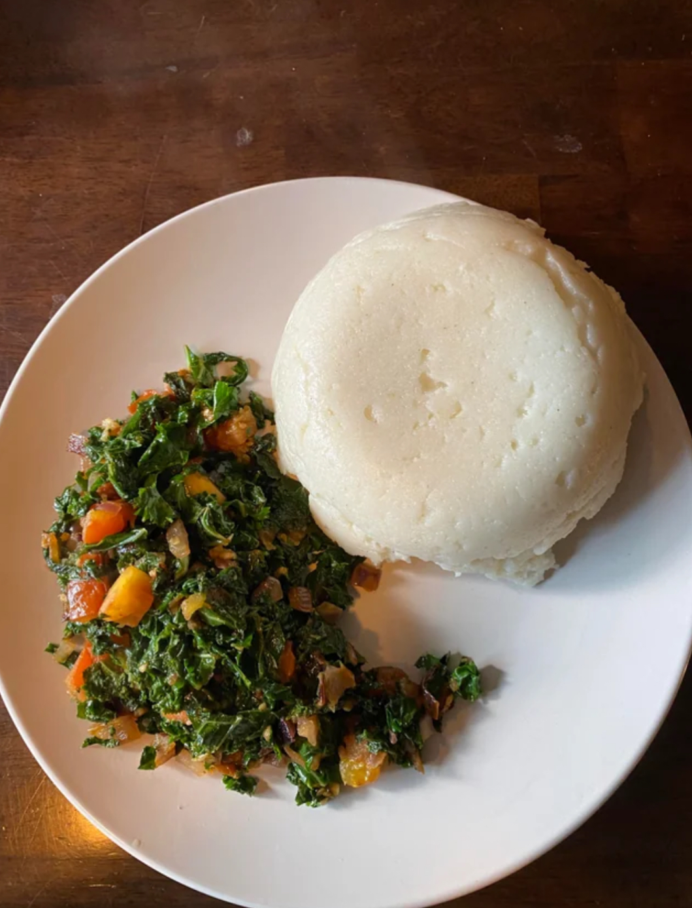

Африка


Злаки: Кукуруза (основа, 36% сбора), просо, сорго, рис, пшеница.
Корнеплоды: Маниок, ямс, батат — часто используются для приготовления «фуфу» (густого теста).
Бананы: Зеленые бананы-плантаны (овощные), которые варят или жарят.
Бобовые: Арахис, чечевица, фасоль.
Мясо и рыба: Говядина, баранина (особенно в Северной Африке), курица. Популярно вяленое мясо (билтонг).